Last modified: Thu Aug 16 2018 22:49:02 GMT+0800 (Malay Peninsula Standard Time)
Chapter 4. Deploy your Application
Heroku is a platform that enables developers to build, run, and operate application entirely in the cloud. The best thing about it is it is free. There are add on that you can add to your application. There are free plans for almost add on available. The only drawback about Heroku server is your application will goes to sleep if there is no activity in 30 minutes. What does it mean? Everytime you go to your Web Application, it will take about 10-15 seconds to start your application. Other than that, it does not have any issue. Also, there is a way to keep the Web Application running at all time. Contact me to get more information about this.
4.1 Heroku CLI
To deploy our application to Heroku server, the first step is to create an account. After you have created your account, download and install Heroku CLI. During installation, do not modify any of the default options. You can read more about Heroku CLI here.
After the installation is completed, open a terminal window and type Heroku. A screenshot below shows the output message when the command is typed. Right now, the root directory of the terminal does not matter. However, you may be required to install some additional file. Read the output message from your terminal and install the required files.
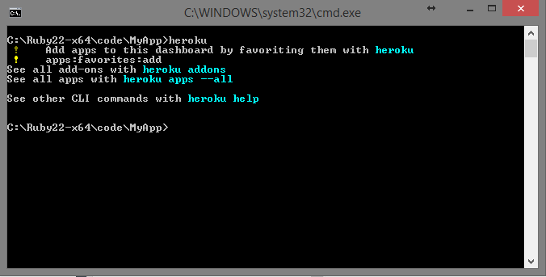
Figure 4.1.1: Heroku command in Terminal Window
Add your Heroku credentials to your computer by using the heroku login. Follow the instruction on the screen to insert your password. Figure 4.1.2 shows a credential is added successfully.
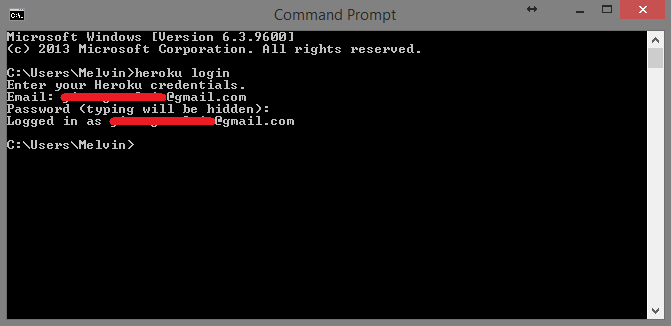
Figure 4.1.2: Adding my credentials
Now, you are ready to deploy your first Web Application to the Web.
4.2 Prepare to Deploy
To deploy your first application, we have to do a slight modification on our database. Follow the instruction below or read Heroku’s tutorial on Getting Started with Rails 5.x on Heroku.
To begin, terminate or close your localhost server using the combination key of CTRL \ C. Then, open your Gemfile and move the line gem ‘sqlite3’ into the group with development and test specified. And add the follow code to the Gemfile. Figure 4.2.1 shows the result of the modification.
Table 4.2.1: Modify Gemfile
#MyApp/gemfile
group :production do
gem 'pg'
gem 'rails_12factor'
gem 'dalli'
end
The reason to move sqlite3 Gem to development and test is due to sqlite3 is not supported in Heroku. We have to use pg (PostgreSQL) Gem. Do note that Ruby on Rails and PostgreSQL are “best friend”. They are the best combination. I do not recommend you to use MySQL over PostgreSQL.
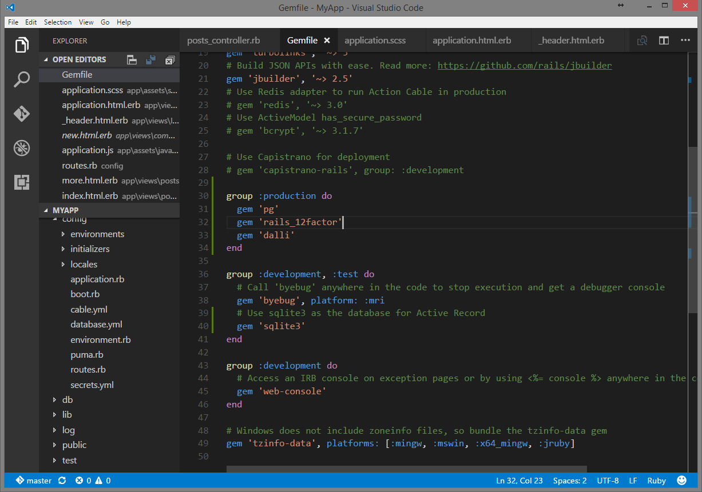
Figure 4.2.1: Result of modification
Head to Github Desktop app and you can see that the file and lies that you change shows up in the “change” tab. As mentioned earlier, red means lines are removed while green means lines added. Figure 4.2.2 shows all the changes I made.
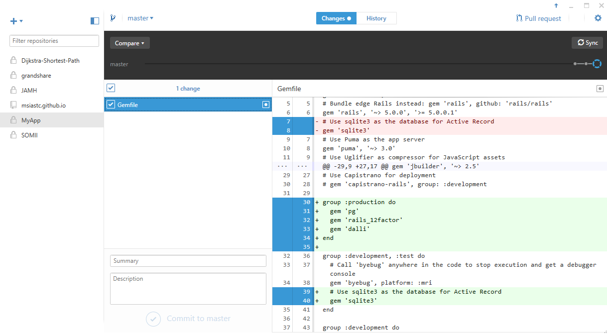
Figure 4.2.2: Changes shown up after the modification is made
Now, enter the command bundle install to update and install the Gem that we specify in our Gemfile. Figure 4.2.3 shows the output after the command is entered. We can see that all the gems are installed without any errors. If you unable to carry out the operation, do note that your path of your terminal has to be the root of your Web Application.
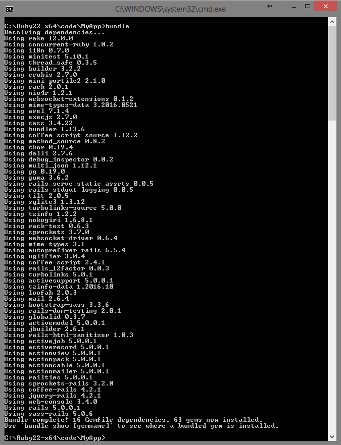
Figure 4.2.3: Operations are carried out successfully.
In your Github Desktop, commit and sync your changes in Github Desktop to prepare for our deploy. If you skipped the step, you will unable to deploy your Web Application successfully since we are going to use the integration available in Heroku.
4.3 Deploy to Heroku
To deploy, there are two ways: GUI and CLI methods. I will always stick with the GUI method as it is easier to see and understand. You can read more about the CLI method if you wish to use CLI.
Login to Heroku Website and you will be redirected to Heroku Dashboard. There are many settings that you can play with in Heroku Website. Do remember to check it out. Figure 4.3.1 shows the Heroku Dashboard. Since you have just created your account, you will not have any personal app shown on the dashboard.
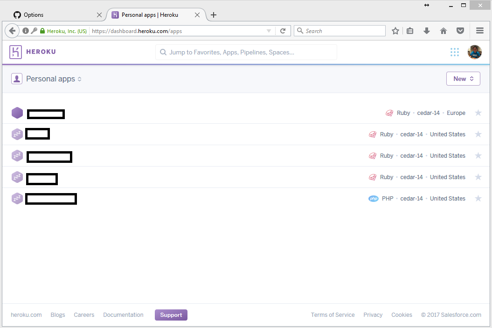
Figure 4.3.1: Heroku dashboard
Press “new” and “create new app” on top right corner of the page. Fill in the information required. The field “App Name” is optional. You will still get to modify your app name later. However, that is part of the link to your Web Application. Press “Create App” to create your app. Figure 4.3.2 shows a new app is being created.
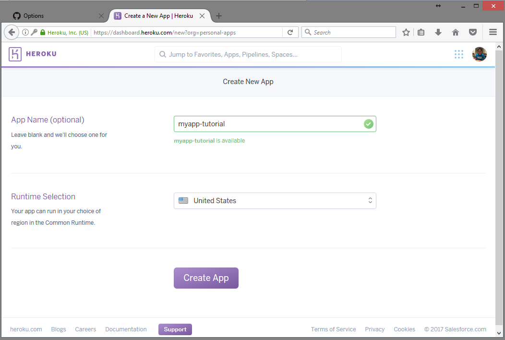
Figure 4.3.2: Creating a new App
You will then redirected to a page that ask you to choose a “Deployment method”. As mentioned earlier, GitHub and Heroku has a good integration. Choose “Github” as the Deployment method. You may have to connect your Github to Heroku if you are using it for the first time. Please complete that before following the next step.
In the other hand, you may choose “Heroku Git” if you prefer CLI. Please follow instruction on the page to use CLI.
Next, enter your repository’s name for the app that you created and press “Search”. Press “connect” when the name of your application matches the one you created. Figure 4.3.3 shows that my repository show up in the search result. You have to enter the name of your own repository. The owner of the repository has access to the repository only. If you are the collaborator of the repository, you are unable to search and deploy the app.

Figure 4.3.3: An app is shown up after the search
After the app is connected, you will get more option. To start deploy operation, press “Deploy Branch”. There is a feature, “Enable Automatic Deploys”, that will automatic deploy for every new commit that you did to Github. In the other word, for every commit that you do, Heroku will fetch the information and Github and deploy it at their end. Figure 4.3.4 shows the screen after I have connected to my app.
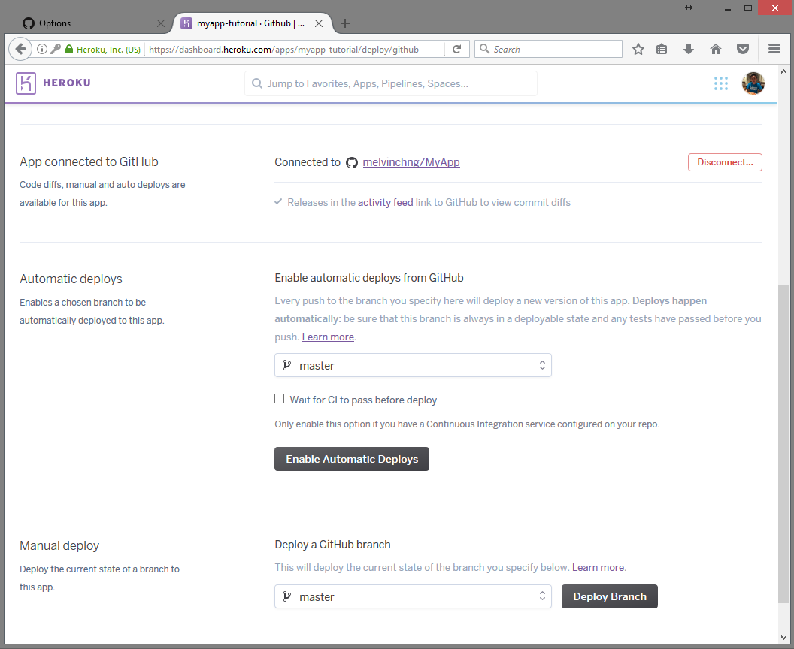
Figure 4.3.4: Deploy Branch and Enable Automatic Deploys
You may receive an email if you deploy is failed. However, you have to keep track of application by yourself to make sure that all the feature works. The operation may take one to two minutes and it is based on the size of your application. You can choose to look at the logs to make sure that everything is going well. If you have done everything correctly, you will some message showing that your application is deployed to Heroku. Figure 4.3.4 shows my application is deployed successfully.
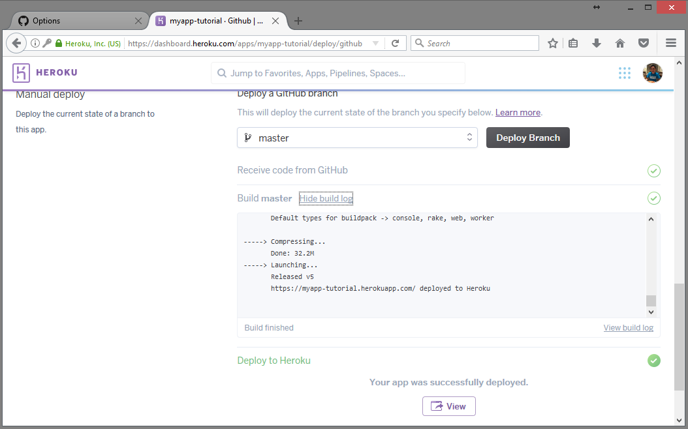
Figure 4.3.5: My app is deployed successfully
Follow the link to your web application! The link to your Web application will always be YOUR_APP_NAME.herokuapp.com unless you changed the domain. Your application should show up at your Heroku Dashboard now. If you received the error “The page you were looking for doesn't exist”, it is completely normal. This is due to we have not configured the root of the Web Application.
4.4 Database Migration
Before we are able to use our Web Application, we have to migrate our database on the server side. The command is pretty similar to what we have done earlier.
To begin, open a new terminal window. Your root directory can be anywhere as we are now using Heroku CLI to interact with our application. To migrate your database, follow the command below. Replace YOUR_APP_NAME with the name of your app that you defined earlier. All commands are case sensitive. If you did not put a name below, you have to return to your Heroku Dashboard to get the name. Figure 4.4.1 shows a migration is completed without any error.
heroku run rake db:migrate --app YOUR_APP_NAME
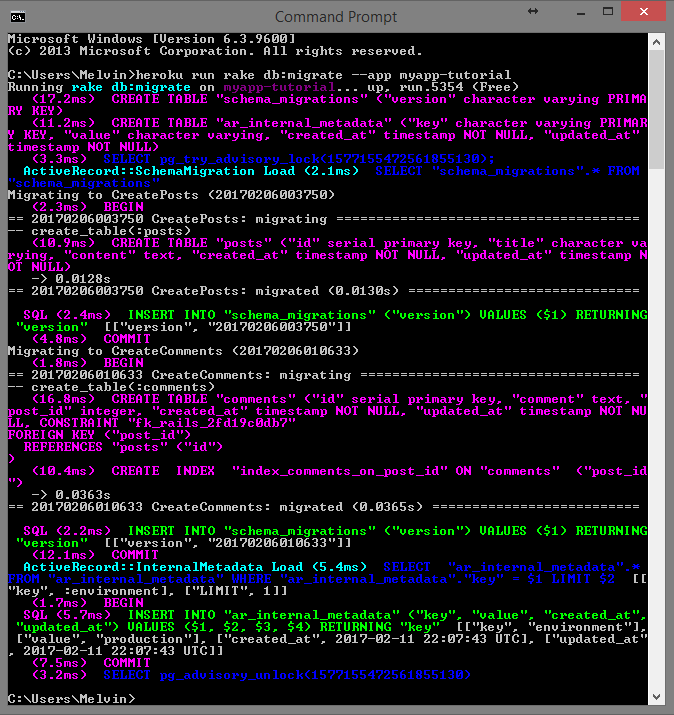
Figure 4.4.1: A migration is completed without any error
Now return to your link given by the Heroku and you should be able to see your Posts page shows up correctly. The link to your Web application will always be YOUR_APP_NAME.herokuapp.com unless you changed the domain. Figure 4.4.2 shows that I am able to access my Posts index page after migration.
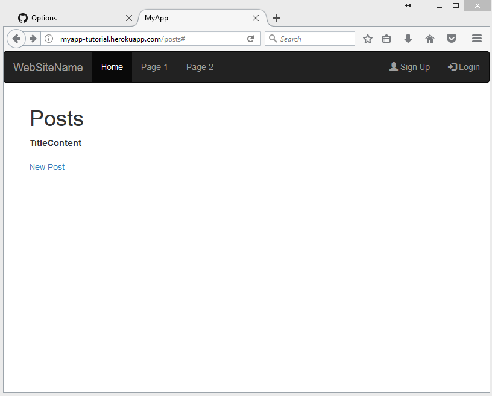
Figure 4.4.2: My Posts index page after migration
4.5 Some Useful Heroku Commands
Some Heroku Commands that you may need are listed below. For your information, you should not simply run them without needing them. For the first command, follow the information output on the terminal to confirm the action.
Reset your ENTIRE database or the ENTIRE database
heroku pg:reset PG_DB_NAME --app YOUR_APP_NAME
Database Migration in Heroku
heroku run rake db:migrate --app YOUR_APP_NAME
Load preloaded seed table (will Discuss in Part II)
heroku run rake db:seed --app YOUR_APP_NAME
To obtain PG_DB_NAME (Postgres Database Name), go to your Heroku Dashboard and click on the name of your app. You will be redirected to a page. Figure 5.5.1 shows I am redirected to my app.
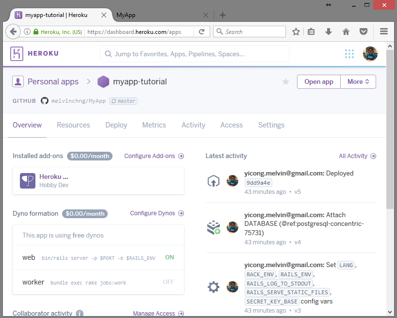
Figure 4.5.1: Overview of my application in Heroku
On the screen, press on the “Heroku Postgres” under “Installed add-ons” You will now redirected to another page and the name of the database is shown on the top part of the screen. Figure 4.5.2 shows my Postgres Database table name.
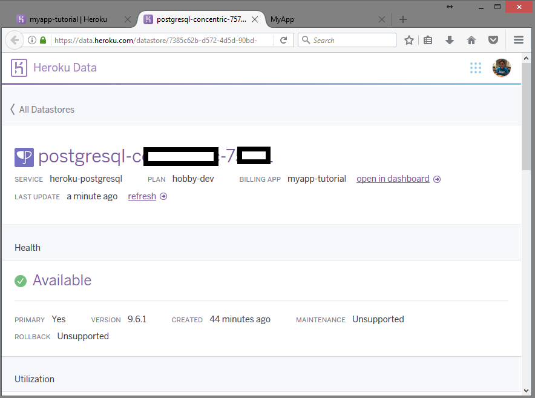
Figure 4.5.2: My Postgres database in Heroku